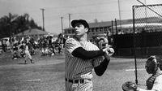
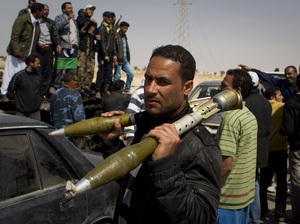

For a couple of generations, Joe DiMaggio symbolized the word class. He was called the Yankee Clipper because he seemed to glide across the baseball field: stately, graceful and powerful.Listen to our latest news update
by Stefan Fatsis - March 26, 2011
All Things Considered - 4 min. 22 sec.
Listen Now
For a couple of generations, Joe DiMaggio symbolized the word class. He was called the Yankee Clipper because he seemed to glide across the baseball field: stately, graceful and powerful.by Cheryl Corley - March 26, 2011
Weekend Edition Saturday - 5 min. 35 sec.
Listen Now
Chicago has the country's third-largest school system with more than 400,000 students including preschoolers. At least 15 of those students have died by gunfire this school year.
According to the Chicago Police Department, last year a total of 70 children of school age, including dropouts and non-public school students, were killed by guns. More than 600 were wounded.
Some experts say witnessing gun violence can lead to violent behavior that may perpetuate crime in at-risk neighborhoods.
But the aftereffects for survivors of gun violence can be devastating.
'I Was In Shock'
Corshana Hatter is slim with dark, Shirley Temple-like curls. She's been in and out of foster homes since she was 7 years old and is currently on probation for getting into an argument with police. Hatter was in Roseland — a South Side Chicago neighborhood struggling with gangs and gun violence — when she was shot last July just a few weeks before her 17th birthday.
by NPR Staff & Wires - March 26, 2011

Libyan rebels regained control of the eastern gateway city of Ajdabiya on Saturday after international airstrikes crippled Moammar Gadhafi's forces, in the first major turnaround for an uprising that once appeared on the verge of defeat.
Drivers honked in celebration and flew the tricolor rebel flag. Others in the city fired their guns into the air and danced on burned-out tanks that littered the road. Inside a building that had served as makeshift barracks for pro-Gadhafi forces, hastily discarded uniforms were piled on the floor.
"Without the planes we couldn't have done this. Gadhafi's weapons are at a different level than ours," said Ahmed Faraj, 38, a rebel fighter from Ajdabiya. "With the help of the planes we are going to push onward to Tripoli, God willing."